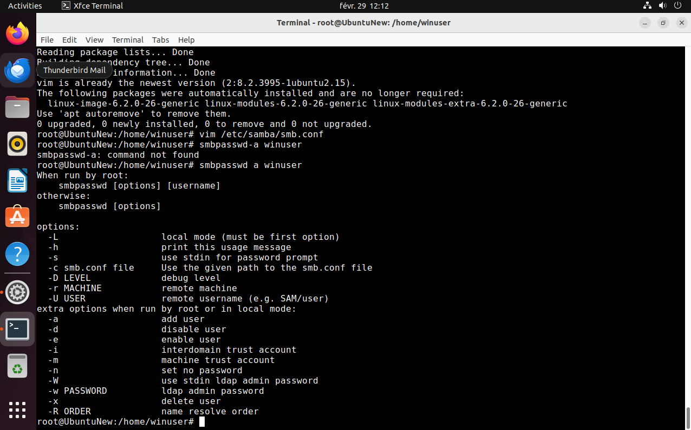

Instalación y configuración de Samba
Explicación
A continuación te mostraremos cómo puedes realizar la instalación y configuración de Samba.
2.Instalación y configuración de Samba.
Primero nos aseguramos de que tenemos completamente actualizados ambos sistemas: Windows y Ubuntu
Instalamos Samba con el comando apt install samba
Creamos un nuevo usuario para conectarnos y compartir documentos con el comando Adduser winuser y clickamos hacia delante.
Nos logamos como usuario y vamos a la carpeta personal, creamos una nueva compartida a la que le damos permiso por medio de: su winuser -> cd -> cd winuser -> mkdir carpeta compartida -> chmod777 carpeta compartida/.
Como administrador instalamos vim.
Cuando está instalado, como root editamos con vim el archivo de configuración por medio de vim/etc/samba/smb.conf

Cuando está instalado, como root editamos con vim el archivo de configuración: ● Vim /etc/samba/smb.conf->
Dentro de Vim vamos al final y escribimos al final del documento (tecla Insert) ● [Compartida] o path = /home/winuser/compartida o browseable = yes o read only = no o valid users = winuser
Salimos de vim pulsando escape y escribiendo: ● :wq-> (write, quit)
Ahora tenemos que añadir a winuser a los usuarios de samba y ponerle una contraseña (seguimos como root): ● smbpasswd a winuser->

Ahora nos cambiamos al usuario winuser para crear un archivo dentro de la carpeta compartida. ● su winuser-> ● cd ..-> ● cd winuser/compartida/-> ● touch archivo-linux->
Ya solo nos queda resetear el servicio samba desde root. ● su -> (contraseña) ● systemctl restart smbd.service-> (Si nos diera error porque no estuviera en ejecución: reload-or-restart)
Ahora miramos la dirección ip de la máquina (la otorga virtualbox) y la anotamos ● ip a-> (o ifconfig) (inet) buscamos la ip (iplinux)
Nos vamos a Windows y habilitamos el uso compartido de archivos y carpetas y dentro de la configuración avanzada del firewall habilitamos todas las reglas de “Archivos e impresoras compartidos” Probamos que tenemos ping y si es así, abrimos ejecutar y escribimos //iplinux/compartida